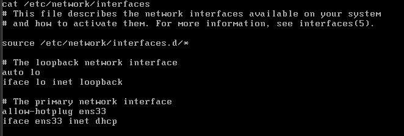
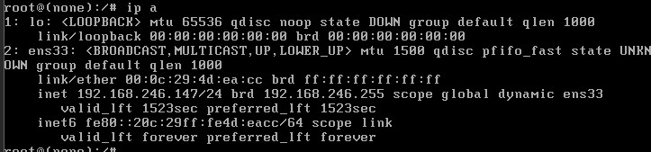
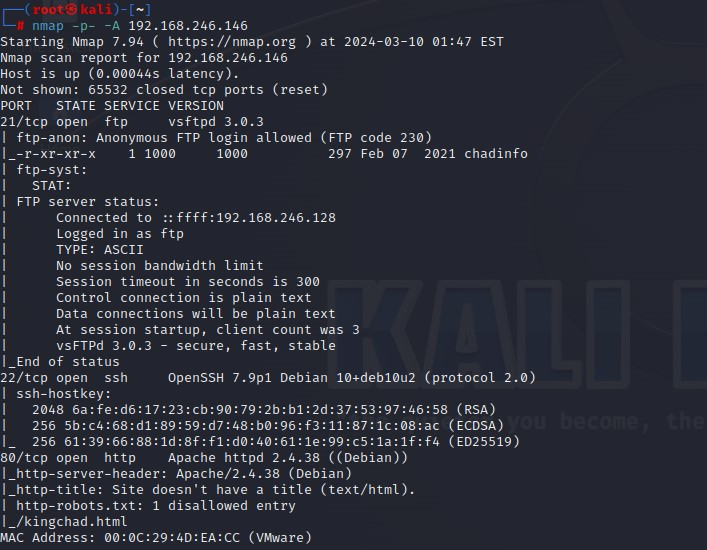
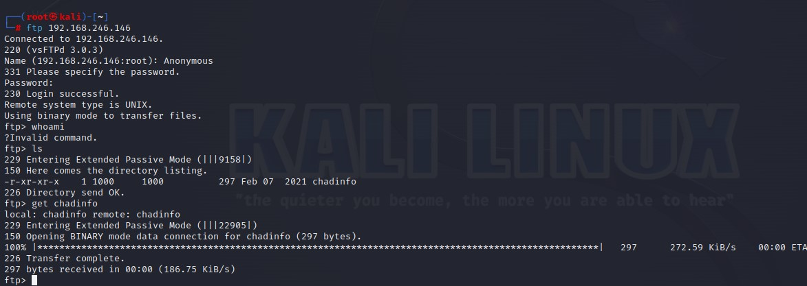
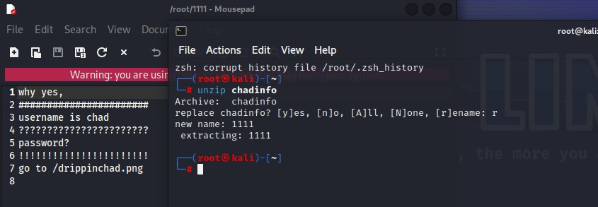
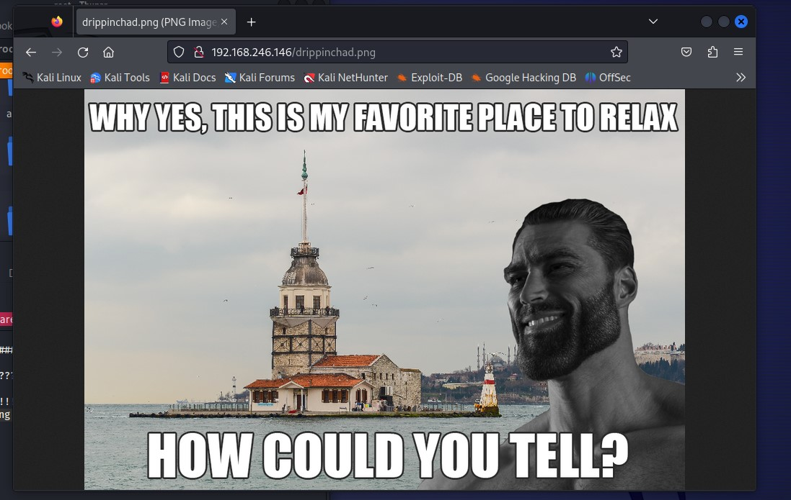
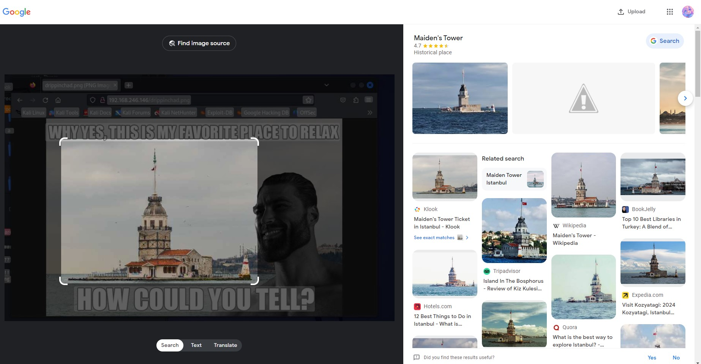
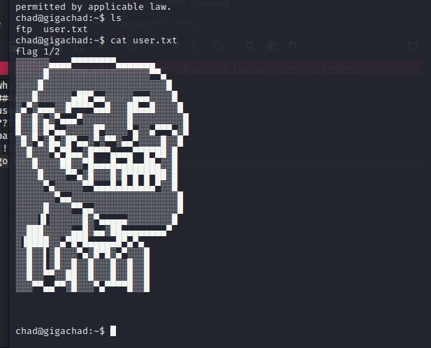

靶机解析-gigachad
这周的靶机
环境设置
攻击机：kali
靶机：gigachad
相关知识-工具
linux单次登录/更改ip设置
提权技巧
searchsploit
具体过程
首先 我们打开两个机子
发现同网段扫不到靶机 检查了vmware的设置依旧没有问题
那就去靶机那里看看网络设置
需要账号密码登录 但我们可以通过更改启动选项来登录
在开机的这个页面按下e键 进入编辑模式
用方向键翻到Linux那行 再按右键一直到该行的末尾 将ro quiet改为rw single init=/bin/bash
rw 代表read write，读写模式。
signie init= 代表启动系统后自动运行的程序。
/bin/bash 是系统shell的位置。

更改完毕后按下ctrl+x来保存 随后你会发现你成功登陆了 按enter来在加载时提前输入命令
在linux内挑出了shell后 为了排查扫不到的原因 先执行ip a检查一下
看来是网卡ens33没有自动分配到ip地址
看一下网络的配置 发现配置的网卡名是enp0s3 明显不对 将它改回ens33

1 | cat /etc/network/interfaces //查看文件内容 |
改完之后重启网络 通过ip a确认靶机已经联网

这里就可以看到靶机分到的ip了
重启靶机后直接在kali进行指定的nmap扫描nmap -A -p- 'ip地址' //-A指综合性扫描

http/80端口开着 ftp/21端口也开着 允许匿名登录 还有个叫chadinfo的文件
先从tcp入手

1 | ftp 'ip地址' //尝试链接ftp服务 |
获取了叫chadinfo的文件

解压之后有个txt文件
里边说用户名是 chad 密码请去/drippinchad.png里找
访问网站底下的这个目录

why yes,this is my favorite place to relax.how could you tell?
这个地的地名似乎就是密码 以图搜图一下

结论：叫做maiden‘s tower
尝试用chad与maiden’s tower的各种形式来登录ssh服务
用maidenstower成功登录

目录底下就有flag1
flag2多半是需要提权了
拿到低权限的shell后经常做的几件事：
1、看系统发行版本 lsb_release -a
2、查看内核版本 uname -a
3、当前用户权限
4、列举suid文件 `find / -perm -u=f 2>/dev/null
5、查看已经安装的包、运行的服务，过期版本可能会存在漏洞find / -perm -u=s -type f -exec ls -la {} ; 2>/dev/null
-perm 是代表按指定权限搜索。
-u=s 其中u代表当前用户的权限，s代表suid权限，-号代表至少需要满足指定的权限，可以有更多的权限，但是不能少了这个指定权限。关于这个参数更详细的内容可以参考：https://blog.csdn.net/weixin_44061169/article/details/105784760
-tpye 代表搜索指定的类型，f代表文件。
-exec 代表搜索完后执行指定的命令，其中{}代表所搜到的结果，命令以;为结束标识。更详细内容可以参考：https://www.pianshen.com/article/86691137271/
2>/dev/null 代表将不显示错误信息

发现s-nail，尝试利用该程序提权
寻找漏洞
将提权文件复制进靶机

加权 运行 要多试几次 最后成功提权
总结
最近有点忙着备考就不写总结了
嘻嘻